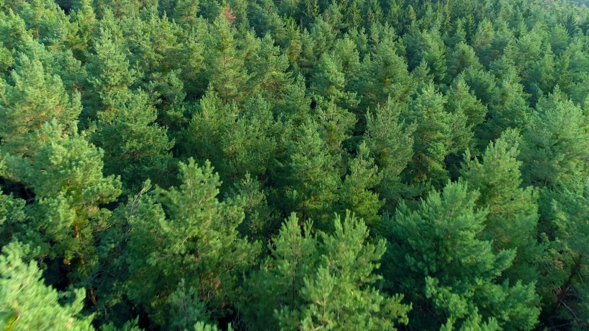

Naturally creative, resourceful & whole
You aren’t broken and don’t need fixing. The answers are already in you; we find them together.
Co-Allies coaching is dynamic and creative. It stimulates and encourages self-exploration, and leads to deep, durable transformation anchored in concrete action.
Nathalia trained as a coach with CTI, the Co-Active Training Institute. Co-Active coaching rests on four cornerstones that shape every session.
You aren’t broken and don’t need fixing. The answers are already in you; we find them together.
Your work, relationships, body and dreams are connected. We work with all of you.
No rigid script. Each session follows what matters most to you right now.
Not quick fixes. Shifts in how you see, feel and act, which last long after we finish.
The Inner Development Goals are a global, open framework describing the inner capacities people need to address the world’s complex challenges. Co-Allies uses its five dimensions as a compass.
Relationship to self: inner compass, integrity, openness, self-awareness and presence.
Cognitive skills: critical thinking, complexity awareness, perspective and long-term orientation.
Caring for others and the world: appreciation, connectedness, humility and compassion.
Social skills: communication, co-creation, inclusive mindset, trust and mobilisation.
Driving change: courage, creativity, optimism and perseverance.
Every session is different, but most follow a natural arc from presence to action.
We slow down, get present and choose what matters most for you today.
Powerful questions, creative exercises and honest reflection uncover what’s really going on.
You leave with a concrete next step, and someone who will hold you accountable to it.

Nathalia specialises in the regenerative economy: the idea that people, organisations and the planet can do more than sustain; they can thrive.
What you share stays between us. Always.
Every feeling, doubt and dream is welcome here.
I’ll ask the brave question when it matters, with care.
Change happens on your timeline, not mine.
The best way to understand coaching is to experience it. Your first 30 minutes are on me.